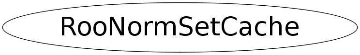

class RooNormSetCache
Class RooNormSet cache manage the bookkeeping of multiple instances of sets of integration and normalization observables that effectively have the same definition. In complex function expression many RooArgSets with the same contents may be passed to an object that caches intermediate results dependent on the normalization/integration set To avoid unnecessary cache faulting, This class tracks all instances with the same contents and reports to the owner if the present nset/iset is truely different from the current reference. Class RooNormSet only evaluates each RooArgSet pointer once, it therefore assumes that RooArgSets with normalization and/or integration sets are not changes during their lifetime.
Function Members (Methods)
public:
| RooNormSetCache(Int_t regSize = 64) | |
| RooNormSetCache(const RooNormSetCache& other) | |
| virtual | ~RooNormSetCache() |
| void | add(const RooArgSet* set1, const RooArgSet* set2 = 0) |
| Bool_t | autoCache(const RooAbsArg* self, const RooArgSet* set1, const RooArgSet* set2 = 0, const TNamed* set2RangeName = 0, Bool_t autoRefill = kTRUE) |
| static TClass* | Class() |
| void | clear() |
| Bool_t | contains(const RooArgSet* set1, const RooArgSet* set2 = 0, const TNamed* set2RangeName = 0) |
| Bool_t | containsSet1(const RooArgSet* set1) |
| Int_t | entries() const |
| Int_t | index(const RooArgSet* set1, const RooArgSet* set2 = 0, const TNamed* set2RangeName = 0) |
| void | initialize(const RooNormSetCache& other) |
| virtual TClass* | IsA() const |
| const RooArgSet* | lastSet1() const |
| const RooArgSet* | lastSet2() const |
| const RooNameSet& | nameSet1() const |
| const RooNameSet& | nameSet2() const |
| RooNormSetCache& | operator=(const RooNormSetCache&) |
| virtual void | ShowMembers(TMemberInspector& insp) |
| virtual void | Streamer(TBuffer& b) |
| void | StreamerNVirtual(TBuffer& b) |
protected:
| void | expand() |
Data Members
protected:
| RooSetPair* | _asArr | ! do not persist |
| RooHashTable* | _htable | ! do not persist |
| RooNameSet | _name1 | ! |
| RooNameSet | _name2 | ! |
| Int_t | _nreg | |
| Int_t | _regSize | |
| TNamed* | _set2RangeName | ! |
Class Charts
{kind=link}
{kind=link}
{kind=link}
{kind=link}

Function documentation
RooNormSetCache(Int_t regSize = 64)
Construct normalization set manager with given initial size _htable = regSize>16 ? new RooHashTable(regSize,RooHashTable::Intrinsic) : 0 ;
void add(const RooArgSet* set1, const RooArgSet* set2 = 0)
Add given pair of RooArgSet pointers to our store
Bool_t autoCache(const RooAbsArg* self, const RooArgSet* set1, const RooArgSet* set2 = 0, const TNamed* set2RangeName = 0, Bool_t autoRefill = kTRUE)
Bool_t containsSet1(const RooArgSet* set1)